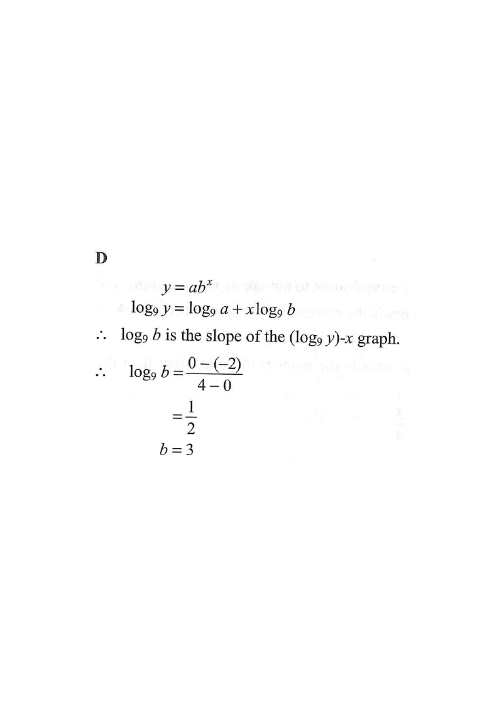

Drag the line, or scroll the solution to highlight each key value.

The straight line passes through $(0,-2)$ on the $\log_9 y$-axis and $(4,0)$ on the $x$-axis.
These two points give everything: the intercept gives $\log_9 a$, the slope gives $\log_9 b$.$$y = ab^{x} \;\Longrightarrow\; \log_9 y = \log_9\!\left(ab^{x}\right)$$
Using $\log(MN)=\log M+\log N$ and $\log M^{k}=k\log M$:
$$\log_9 y = \log_9 a + x\log_9 b$$
Converting the exponential model into a linear model: $Y = mX + c$ with $Y=\log_9 y$, $X=x$.Comparing with $Y = mX + c$:
$$\text{slope } m = \log_9 b, \qquad c = \log_9 a = -2$$
The slope of the $(\log_9 y)$–$x$ graph equals $\log_9 b$.$$\log_9 b = \frac{0-(-2)}{4-0} = \frac{2}{4} = \frac{1}{2}$$
Slope $=\dfrac{\Delta(\log_9 y)}{\Delta x}$ using $(0,-2)$ and $(4,0)$.$$\log_9 b = \frac{1}{2} \;\Longrightarrow\; b = 9^{1/2} = 3$$
Definition of logarithm: $\log_9 b = k \iff b = 9^{k}$.Question. The graph in the figure shows the linear relation between \(x\) and \(\log_{4}y\). The straight line passes through \((0,-1)\) and \((2,0)\). If \(y=ab^{x}\), then \(b=\)
A. \(2\) B. \(4\) C. \(\dfrac{1}{2}\) D. \(16\) (1 mark)